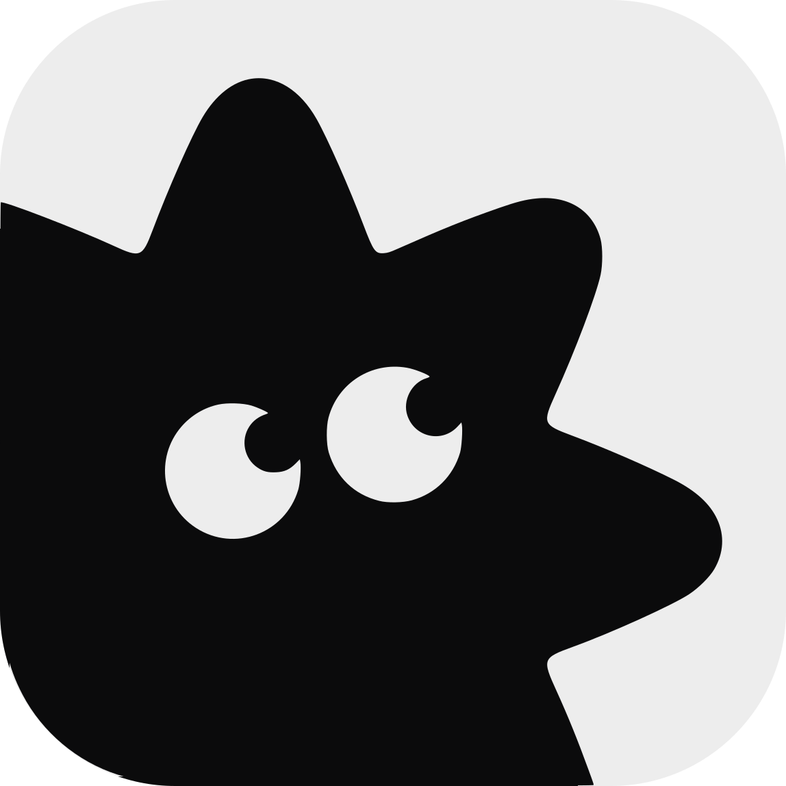
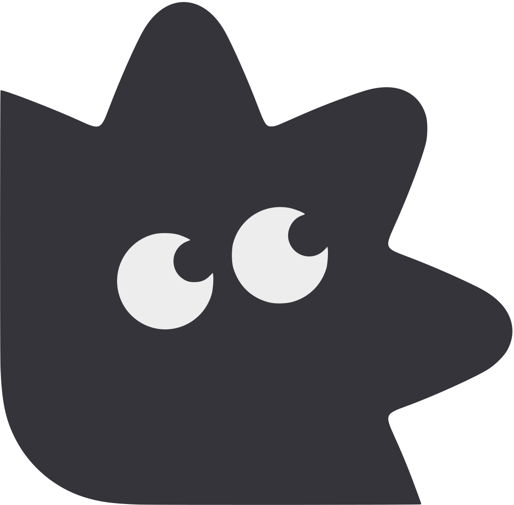
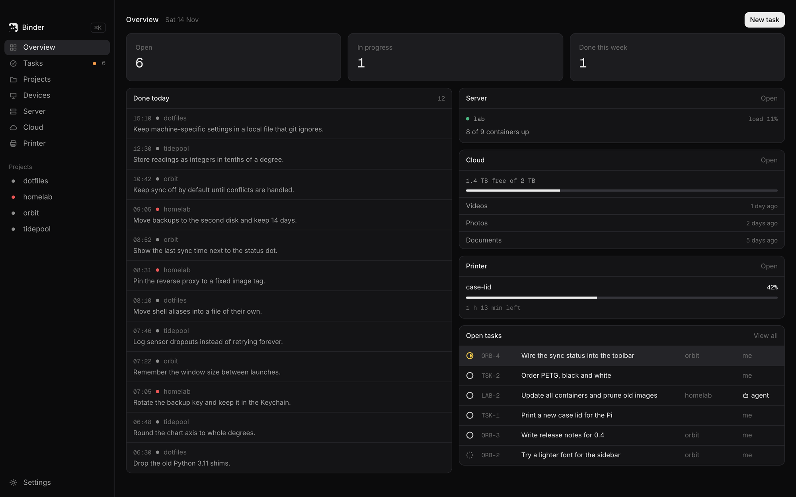
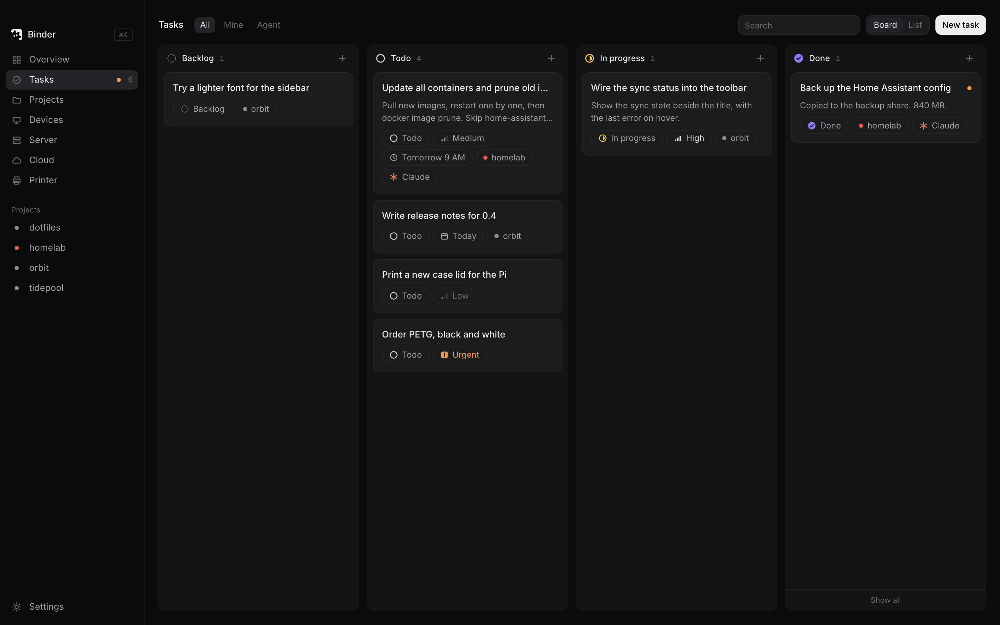
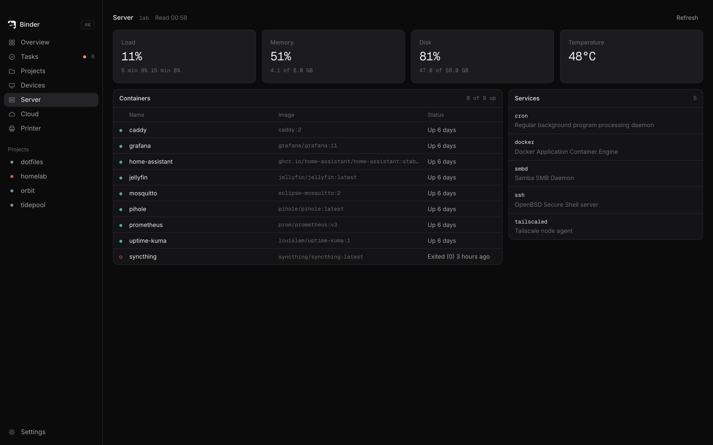

Tasks
A board of soft cards or a keyboard-first table. Hand a task to Claude Code on your server and it runs in the background.
claude -p over SSH

BinderTasks for you and a Claude Code agent, every GitHub repo, the home server, a file manager over it and the 3D printer. Mostly black and white, keyboard first, built for one person.
v2.2.0 · macOS · Apple silicon · AGPL-3.0


What it does
A board of soft cards or a keyboard-first table. Hand a task to Claude Code on your server and it runs in the background.
claude -p over SSH
Every GitHub repo arrives on its own. Your edits stay, nothing is deleted, and each project keeps a note in Obsidian.
gh repo list
Three hooks catch the decisions each session makes and write them to the project's daily file. Overview shows today's.
Daily/2026-11-14.md
A small Finder for a folder on your server. Right-click, Quick Look, zips opened on the server, a trash on every disk.
node_modules in 1.3 s
Containers, services, load, memory, disk and temperature, read over SSH every 30 seconds. It only ever reads.
8 of 9 containers up
A Bambu Lab printer in LAN mode with its job, progress and temperatures, and every machine you own with a dot for whether it answers.
case-lid · 42% · 1 h 13 min left
The board
Two lines of notes and a row of chips: status, priority, due date, project and the agent. Drag a card to change its status. Press c to add one anywhere.


The home server
Binder reads your server over plain SSH with your own keys. A green dot means up, a hollow red ring means down. It never stores a password and never touches ~/.ssh.
Arrows move, Enter opens, a letter creates. Everything else is one palette away.
A SQLite file on your Mac, notes in your own vault, files on your own server. No account, no cloud of ours.
~/Library/Application Support/…/binder.db
A Rust core in a Tauri window, using the system's own web view. The whole app is 12 MB.
Binder.dmg · 6.8 MB
Nothing open. Press c to add a task.
Not notarized yet: the first launch needs System Settings, Privacy and Security, Open Anyway.